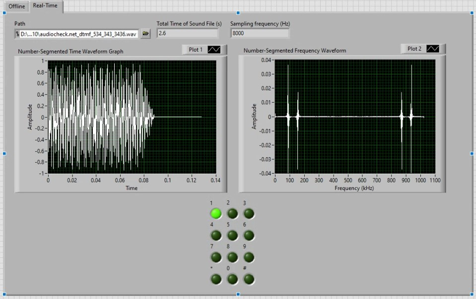

DD:/Programming
Animation for a digital clock
hh:mm:ss
Embedded Lunar Landing Game, SFU
- Developed a Lunar Landing game on an embedded platform such as TivaC + Nokia 5110 LCD with a small team, managing the scope of work, as well as the limitations of the platform, that resulted in meeting the deadline with extra features shipped.
- Used ARM Keil uVision as a coding environment to write well-commented code in C.
Web Development and Network Communications
- Using the OSI model, TCP/IP, and Sockets to create a small network and ping computers for testing
- Use of Tailwind CSS and Pixi.js in building a personal website to improve the UI and functionality.
- Launched my website on GitHub and remade it with classic CSS.
Python Web Scrapper and File Automation
- Use of Selenium and beautifulsoup4 for browser login automation and scraping.
- Effective use of external Python libraries to automate tasks on Windows through Command line/PowerShell/Bash scripts.
- Successful scraping of song lyrics websites to find lyrics of the forgotten song.
- Cover Letter automation through scraping online information from the job posting, parsing it into Excel through Pandas, and finally adopting external data in MS Word; code on GitHub.
Industrial Control System of a Mixer
- Ladder logic programming of a PLC (Simulation) with feedback control for the Industrial Mixer in PSIM to account for any failures due to mistakes in coding and produce a robust system that can reach a steady state quickly.
LabView Oscilloscope and DTMF decoder
- Developed UI/UX, including the logic behind the Dial Tone Modulation Frequency decoder and Oscilloscope implemented in LabView with a small group of teammates
- Implemented multiple file formats as input for spectral and Fast Fourier Transform frequency analysis; (allowed: .wav, .csv, microphone.)
- Added an option to choose between Real-time and data file analysis
